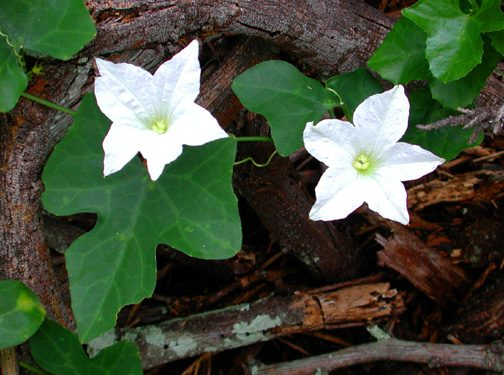

कुंदरूIvy Gourd
Coccinia grandis · Cucurbitaceae · FLR-0134

- Scientific name
- Coccinia grandis (L.) Voigt
- Family
- Cucurbitaceae
- Hindi
- कुंदरू
- Local names
- kundru, kundroo, kunduri, tindora, tendli
- Status here
- native
- Movement
- Resident, here all year
- IUCN
- not evaluated
- Review
- audited and independently read
When to look कब देखें
Present all year.
Uses and possibilities उपयोग और संभावनाएँ
“Traditional medicine” means a documented traditional use, not a claim that it works. Nothing on this page is medical advice.
Drawn from the documented uses in the profile below, where each is labelled traditional, current or a research lead. All uses →
Tell it apart from इनसे अलग पहचानें
कुंदरू / Ivy Gourd
Coccinia grandis (L.) Voigt — Cucurbitaceae
कुंदरू — पूर्वी उत्तर प्रदेश के घरों की बाड़ी में खीरे-तरबूज़ की तरह उगाई जाने वाली एक बहुत ही आम सब्जी। बेल पतली, हल्की-फुल्की, तीन-पाँच मीटर तक लंबी, दूसरी चीज़ों पर चढ़ जाती है। छोटे पत्ते हरे, गोलाकार-ज़ैतून जैसे, पीले फूल छोटे-छोटे गुच्छे में। फल छोटे, डेढ़-दो इंच, हरे रंग के, अंदर से सफेद-गुलाबी माँस, बीज काले। यह सब्जी उबालकर या तलकर खाई जाती है और बरसात में यह बेल खूब फलती-फूलती है।
Quick Identification त्वरित पहचान
| Feature | Description |
|---|---|
| Stem | Slender, angular, climbing or trailing, hairless, green, up to 5 m |
| Leaves | Small, 3–10 cm long, ovate to heart-shaped, margins entire or slightly lobed, petiole 2–3 cm |
| Tendrils | Simple, axillary, 5–8 cm, coiled, for climbing |
| Flowers | Small, yellow or pale yellow, funnel-shaped, 1–1.5 cm, borne in small clusters |
| Fruits | Ellipsoid berries, 2.5–4 cm long, initially green, ripening to orange-red |
| Seeds | Compressed, brown, 8–10 mm, numerous per fruit |
Field tip: A delicate, fast-growing climbing vine with small oval green leaves and small yellow flowers, bearing clusters of small green then orange-red berries no larger than a finger joint. It scrambles over hedges and garden structures, and the ripe fruits are eaten as a vegetable.
Morphology आकारिकी
Biometrics (typical measurements for cultivated plants in the Gangetic plain):
| Measurement | Range |
|---|---|
| Vine length | 3–5 m |
| Leaf length | 3–10 cm |
| Leaf width | 2–8 cm |
| Petiole | 2–3 cm |
| Flower diameter | 1.0–1.5 cm |
| Fruit length | 2.5–4 cm |
| Fruit diameter | 1.5–2.5 cm |
Stems: Slender, angular, not woody, hairless, green, producing tendrils from axils.
Leaves: Simple, alternate, ovate to cordate, margins entire or slightly undulate. Texture is soft and smooth. Midrib and primary veins visible but not prominent.
Flowers: Regular, 5-lobed, pale yellow or white, funnel-shaped. Stamens are united; the flower opens in morning and often closes by afternoon. Both male and female flowers occur; female flowers slightly larger.
Fruits: Smooth, thin-walled berries that soften on ripening. Flesh is white to pale pink, with spongy texture. Seeds are numerous, compressed, and light brown.
हिंदी: पतली डंडी, छोटी पत्तियाँ, पीले फूल, छोटे हरे-नारंगी फल। फल उबालकर या तलकर खाते हैं।
Behaviour & Ecology व्यवहार और पारिस्थितिकी
A tender annual or short-lived perennial climber of tropical Asia, widely cultivated in homestead gardens across the Indian subcontinent for its edible fruits. It is a warm-season plant that germinates readily from seed and grows quickly in summer, flowering within 8–10 weeks of sowing. The thin stem is not woody and does not compete vigorously with other plants, making it suitable for vertical gardens and trellis systems. The plant is shallow-rooted and demands consistent soil moisture and warmth; it is sensitive to cold and often dies back in winter or when temperatures drop below 10°C.
The small flowers attract small bees and hover-flies. The fruits are eaten by birds, particularly in ripening fields, though humans usually harvest them before maturity for vegetable use.
हिंदी: यह गर्म मौसम की बेल है, बरसात और गर्मी में अच्छी बढ़ती है। सर्दी में मर जाती है। बीज से नई बेल उगानी पड़ती है।
Life Cycle / Phenology जीवन चक्र
| Month / Season | Event |
|---|---|
| February–April | Sowing of seeds in nurseries or direct in beds after the last frost |
| April–June | Germination and vegetative growth; covering trellises |
| June–September | Flowering, fruit set, and ripening |
| July–December | Harvesting of green fruits; ripe fruits orange-red |
| December–January | Plant decline; frost damage or natural senescence |
| February onwards | Replanting for the new season |
From seed to first harvest: 6–8 weeks. A succession of flowers and fruits appears throughout the warm season if the plant is watered regularly.
हिंदी: मार्च-अप्रैल में बीज बोते हैं, जून तक फूल आते हैं, जुलाई से सर्दी तक फल तोड़ते हैं।
Associated Species / Interactions संबंधित प्रजातियाँ
- On the same trellis: Often grown alongside Ridge Gourd, Bottle Gourd, and cucumber on the same support.
- Insect visitors: Small bees (Dwarf Honey Bee) visit the flowers. Pollination is also by wind and other small insects.
- Garden companions: Grown in kitchen gardens (bari) alongside Onion, Potato, and Pea.
Pests and Diseases कीट और रोग
- Fruit flies and squash bugs: Occasionally damaged by fruit-feeding insects, but less severely than larger gourds.
- Powdery mildew: White fungal coating on leaves in humid conditions; usually not serious.
- Root rot: Waterlogging or poor drainage can cause root diseases, especially in clay soils.
- Generally hardy: Compared to Ridge Gourd and Bottle Gourd, kundru is relatively pest-free and fast-growing.
Agricultural / Human Relevance कृषि प्रासंगिकता
Food use. The young tender fruits, harvested when 2–3 weeks old and still green, are boiled, fried, or curried. The vegetable is light, easily digestible, and recommended for children and elderly people. The unripe fruit has a slightly bitter flavor, often removed by pre-boiling. Ripe orange fruits are sweeter but less commonly eaten as vegetables; sometimes stewed as a dessert.
Traditional medicine. In Ayurvedic and folk medicine, the fruit and root are recorded as cooling (shita) and used in the treatment of burning sensations, fever, and digestive complaints. The leaf decoction is taken for cough in some traditions.
Garden practice. The plant's fast growth and light canopy make it ideal for vegetable gardens where shade from heavy vines is not wanted. In summer it cools the surrounding area without blocking light entirely.
हिंदी: कुंदरू बहुत आसान सब्जी है। बीज बोते हैं, जून में फूल आते हैं, फल तोड़ने लगते हैं। बहुत कम खेती-बाड़ी की ज़रूरत नहीं।
Expected Locally स्थानीय रूप से अपेक्षित
Not a field record. Written from published accounts for eastern Uttar Pradesh. No confirmed local sighting yet — if you have seen it, that is what the atlas needs.
अभी तक स्थानीय पुष्टि नहीं। यह विवरण प्रकाशित स्रोतों से है, किसी अवलोकन से नहीं।
Expected as a cultivated plant in homestead gardens and vegetable fields throughout Basti district, commonly grown on makeshift trellises made of bamboo or dried branches. The vegetable is sold in local markets (bazaar) during the monsoon and early winter season, and is more common in household gardens than in commercial cultivation.
Distribution वितरण
Global range: Native to Africa and South Asia; now cultivated throughout tropical Asia, particularly in India, Bangladesh, and Southeast Asia.
In India: Cultivated widely in home gardens and vegetable fields across the peninsula and plains; particularly common in eastern and southern India.
In Uttar Pradesh: Grown in household gardens throughout the state, more common in eastern and central districts.
In Basti district / eastern UP: Common as a cultivated plant in homestead gardens; found in nearly every vegetable garden (bari) during the warm season.
Research Questions शोध प्रश्न
Anyone can investigate these | कोई भी इन प्रश्नों की जाँच कर सकता है
- How many days does it take from sowing to the first flower? / बीज बोने से पहले फूल आने तक कितने दिन लगते हैं? — Sow in a cup of soil indoors or under shade and count days to first flower.
- Do insects visit the flowers in the morning or afternoon? — Sit near a flowering plant for 15 minutes in early morning and again at 2 PM; count insect visitors.
- Which insects damage the leaves or fruits in your garden? — Examine 20 leaves and 10 fruits; photograph any damage and identify the pest.
- Can you grow kundru from a cutting instead of seed? — Take a 10 cm stem cutting, plant it in moist soil, and see if it roots.
- How many fruits does one plant produce in a season? — Count all fruits harvested from one plant from flowering to frost.
Similar Species मिलती-जुलती प्रजातियाँ
| Species | How to tell apart | हिंदी |
|---|---|---|
| Ridge Gourd (Luffa acutangula) | Larger fruits (15–25 cm), ridged, pale yellow when ripe; leaves more deeply lobed | तोरई — बड़ी फली, लकीरें |
| Bottle Gourd (Lagenaria siceraria) | Larger fruits (20–30 cm), bottle-shaped or round; tougher rind; perennial in some forms | लौकी — बड़े फल, बोतल जैसे |
| Bitter gourd (Momordica charantia) | Fruits small, bitter, warty, orange when ripe; leaves deeply lobed | करेला — कड़वा, फल ऊबड़-खाबड़ |
Field rule: A delicate, thin-stemmed climber with small oval green leaves and clusters of small green fruits that ripen to orange-red is kundru.
Taxonomy & Classification वर्गीकरण
Original description. Described by Linnaeus as Bryonia grandis in 1753 and transferred to Coccinia by Voigt in 1845. The genus Coccinia contains about 25 species in Africa and Asia.
Subspecies. Monotypic — no subspecies are currently recognised.
Family and order placement. Cucurbitaceae, order Cucurbitales. The family includes all gourds, melons, and pumpkins; Coccinia shares the tendril-bearing habit with Ridge Gourd and Bottle Gourd.
Phylogenetic notes. Coccinia grandis is an Old World tropical genus, with closest relatives in Africa. The genus is distinct from Cucumis (cucumber) and Lagenaria (bottle gourd) in flower structure and fruit type.
IUCN status rationale. Not evaluated. Widely cultivated throughout the tropics with no conservation concerns.
Photo Gallery फोटो गैलरी
Photos needed आवश्यक फोटो
- [ ] Vine with flowers and young fruits
- [ ] Ripe orange fruits on the vine
- [ ] Green fruits being harvested for vegetable use
References संदर्भ
- Voigt, J.O. (1845). Hortus Suburbanus Calcuttensis. Printed at the Baptist Mission Press, Calcutta.
- Hooker, J.D. (1875). Flora of British India, vol. 2. L. Reeve & Co., London.
- Kirtikar, K.R. & Basu, B.D. (1935). Indian Medicinal Plants, vol. 2. Lalit Mohan Basu, Allahabad.
- Chopra, R.N., Nayar, S.L. & Chopra, I.C. (1956). Glossary of Indian Medicinal Plants. CSIR, New Delhi.
- Renuka, C. (2007). Flowering Plants of Kerala. Kerala Forest Research Institute, Peechi.
- GBIF Occurrence Data — Coccinia grandis, India (2020–2026).
Source file: species/flora/climbers/kundru.md